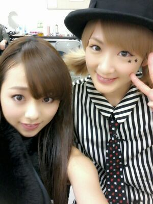
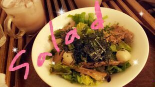

やあっ(・θ・)ノ☆
お風呂あがったぁ〜
今日も元気いっぱいrotty★だよ/
今日の顔文字
全部ヒヨコちゃんで行くわ )))

↑(握手会の時 生駒ちゃんと★
きゃわいーよ。大好きやでぃ〃θ〃)
あの〜 、あの〜
突然申し訳ないんですが(；・θ・)...
肩と首のこりは
どーすればいいんでしょうか(・θ・？
皆助けてっっ、、、
Rotty肩こり首こり？
激しいw。
やあね。たっくん♪
こまったっくん♪
３時間位
全身マッサージしてほしい。
そしたらまひろも３時間
マッサージしてあげます(*・θ・*)
３時間、３時間で
プラマイゼロ☆! !
料金ゼロ★! ! (笑)
あ、え、でも
皆も、絶対 こってるでしょー( ^θ^ )？
お勉強とかお仕事とか
家事とかしてたら
『ウw。 痛い。』って
絶対なってるはずやわ〜(*^θ^*)笑
体質によって人それぞれですけどねぇ〜♪
ってことで、
整体に行ってリフレッシュしてから
帰ってきました ☆
先生に首をやってもらっている時に
「肩と首意外にどこか
気になる所はありますか〜?」
と聞かれたので
「ん〜、他は特に大丈夫で〜す/」
と答えたら
「うん、確かに電柱もんでるみたいだもんね♪」
って返ってきました )))
『ぬはっ!? デ、デデデ 電柱ッ!!?』
ぃゃぁ〜、
まさか電柱ほどとは... 笑)))
ぉお〜
ここまでのblogの内容だと
肩と首のこりで整体の話で
何かもう、まひろ
元気いっぱいの女子高生(/^θ^)/
って感じぢゃないなあっ 笑)))
もう１つ話あるけど
次だなっ ♪笑
なんか皆の体の状態とか
アドバイスとか教えてよん ♪笑
やばい、
ろってぃーblogのコメントが全部
「肩痛い」
「頭痛い」
「最近 膝痛い」
......
なんかもうおばあちゃんのblog
みたいなるやん ☆☆)))
ほな コメント読むの
楽しみにしてますよん♪笑
あ、皆の好きなアイスの味
読んだよ♪♪るん
サーティワンアイスで
フレンチトースト...?だっけな、
まひろ的にはだよ、
まひろの中では
フレンチトースト ヒットした〃θ〃
食べた時 美味しさに感動したよ☆。
今日も１日おつかろてぃーん ☆
おやすみなさい... 大好き〜〃θ〃)/
のし。
